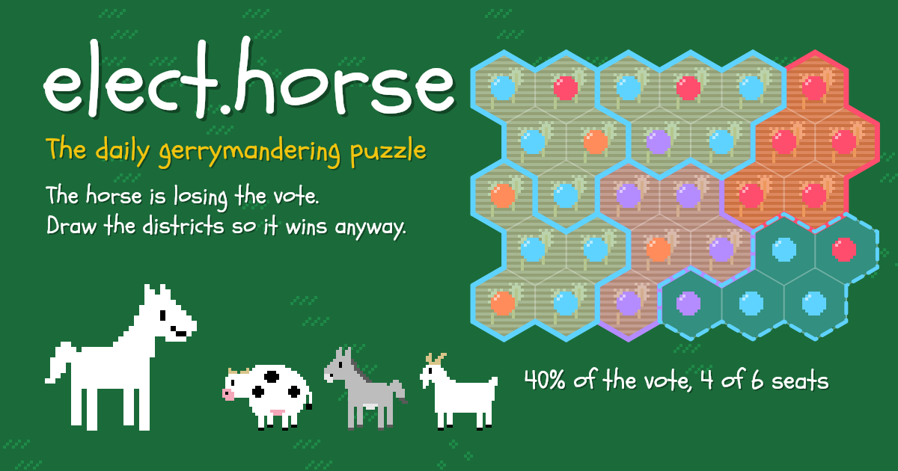

The front page, read closely and set in type — a briefing for Keegan
Compiled from news.ycombinator.com
Friday, October 30, 2026
Every fact checked; every joke earned
Foreign Desk · The LeadSixty-nine dead in SpainA computer failure halted six trains; the control centre started them moving again “without any speed restrictions,” by the transport minister’s account. Three days of national mourning. The lead, set straight.
Finance Desk · The Vault$5.6B leaves BinanceThe day’s most-discussed thread (991 comments) — and roughly $2.4 billion of the haul is already frozen at the exits by Tether and Circle, per the ledger-keepers in the comments.
AI Desk · Follow-UpLe Chonk, out of previewMistral’s trillion-parameter open-weight release returns at 1,556 points, up 595 since yesterday’s edition — while the thread audits the word “open.”
Security Desk · Supply ChainBackdoor in the “official” Claude Code extensionVersion 2.1.313 shipped a persistent SSH backdoor via the Cursor marketplace — and a non-root permissions bug means the macOS door mostly refuses to open.
Lead Story · Foreign Desk · Reported From the Record
At Least Sixty-Nine Dead in Spain; the System Stopped the Trains, Then Someone Started Them Again
A state Renfe high-speed train struck a stationary private train from behind near Urda, south of Madrid, after a computer failure halted six trains and the control centre cleared them to move again; the transport minister calls the decision “inexplicable”
From the Foreign Desk★ 226 pts · 406 comments
URDA, SPAIN — Two trains collided on the high-speed line from Madrid to Seville on Wednesday morning — at 08:53 local time, 07:53 GMT, between Mora and Orgaz, some 140 kilometres south of Madrid — when a state-operated Renfe high-speed train ran into the back of a stationary train run by the private Iryo company near the town of Urda, in the province of Toledo.[1] At least 69 people were killed and dozens injured; more than 500 passengers were aboard; some carriages went down an embankment. Spain has declared three days of national mourning. It is the country’s worst rail crash since 2013.[1]
The scene near Urda, in the province of Toledo, on the Madrid–Seville high-speed line. BBC / ichef.bbci.co.uk
The sequence, as the Spanish government tells it: a computer failure at about 08:30 halted six moving trains. “In the event of a system failure, the control centre takes over,” Transport Minister Óscar Puente said — and it was the control centre that decided to let the trains move again, with no speed restrictions, a decision Puente called, in the government’s own account, one made “under inexplicable circumstances.”[1] The Renfe train then struck the Iryo train, stationary on the tracks about 25 kilometres ahead; Iryo says its train was “struck from behind” by a Renfe train “due to causes that are still unknown.”[1] Audio obtained by Spanish media, reported by the BBC, appears to show a high-speed train was given clearance to move at 08:36 even though another stood disabled ahead.[1]
The Herald sets this one without ornament. The thread beneath the story — 406 comments, the day’s third-largest — asks the systems question the country will now spend months on: why a safety system that locked the trains down as designed was then overridden by the humans it was protecting. One reader: “The system did exactly what it was supposed to (lock the train down if the track can’t be confirmed clear), and then a human controller ordered the crew to override the system, and ordered them to proceed at an unsafe speed towards a similarly disabled train.”[2] Another argues the fix is positional, not procedural — that fifty-odd high-speed trains in simultaneous motion in one country deserve better than a control-centre telephone; a third sketches the likely failure shape: a fall-back from line-based train control (LZB) to the older point-based ASFA system, whose coarser blocks turn a disabled train into a blind spot, “hypothetical” until the safety report lands.[2]
Finance Desk · The Vault
$5.6 Billion Leaves Binance; $2.4 Billion of It Is Already Frozen at the Exits
Finance Desk★ 1,522 pts · 991 cmts
The entity tracker at Arkham Intelligence now lists a wallet cluster it names, without poetry, “Binance-hacker-1029” — $5.6 billion taken from Binance, submitted under a title that reads like a case number and became the day’s most-discussed story, 991 comments deep by snapshot.[3][4] The Herald’s copy desk could not open Arkham’s explorer page itself — its gates turned this newsroom away — so this dispatch is typeset from the submission and its thread, where the ledger-keepers had already done the arithmetic: roughly $2.4 billion of the haul is frozen, they report, at the issuer level — 971.15 million USDT on Ethereum, 823 million USDC on Ethereum, 312.73 million USDT on Tron — each figure pinned to its own on-chain transaction.[4]
The thread’s civic lesson is that the money never fully left the building. “USDT has a ‘black list,’” one reader explains, “and admins can prevent any address holding USDT from spending,” implemented in the contract itself — “not truly decentralized.”[4] The irony did not go unmined: “I thought the point of crypto was no takesies-backsies?”[4] Elsewhere the thread supplies its own attribution desk (North Korea, by reputation and pattern, in one reader’s telling) and its own eulogy for the ideology: the heist is “simply cryptocurrency that has been reallocated from an exchange to a more competent party, as the free market intended.”[4]
The Haul, As Frozen (per the thread’s ledgers)
Reported stolen (submission title)
$5.6B
Frozen, per thread: USDT on Ethereum
$971.15M
USDC on Ethereum
$823M
USDT on Tron
$312.73M
Approximate total frozen
≈$2.4B
AI Desk · Follow-Up · Open Weights
Le Chonk, Out of Preview and Into the Open (Weights)
AI Desk★ 1,556 pts · ▲ +595 since the last edition
Mistral has released the weights of Mistral Large 4 — the one-trillion-parameter, natively multimodal model it calls, without apparent embarrassment, “Le Chonk” — and the story has done what the model does: grown fast, from 961 points at yesterday’s afternoon edition to 1,556 this morning, a 62 percent gain.[5][6] The release-day claims arrive with receipts: 19.7 percent on Cognition’s private FrontierCode 2.0, the benchmark scored by “whether a repository maintainer would merge the agent’s change”; a 13-point jump to 41 percent on Terminal-Bench 4.0 while cutting output tokens 30 percent; and 48 percent on the Artificial Analysis Coding Agent Index, “effectively tied” with GLM-5.3 at 47 percent fewer tokens per task.[5] “Gains continue to accelerate,” the company writes, “with no signs of saturation.”[5]
The announcement art, second day on the wire; the cat has since gained 595 points. Mistral.ai
What grew overnight, though, is the audit. The thread now runs a seminar on the word “open”: the release ships under a modified MIT license whose MaaS clause — quoted in full by one reader — requires a separate commercial license from Mistral to operate the model as a service. “It’s not open weight, it’s weights available,” runs the dissent; “If they want to be open source, they also need to, y’know, open the source,” runs the deeper one — “Weights are more like an executable binary.”[6] The pricing desk kept score: input and output tokens now cost $0.7 and $2.1 per million, nearly half the preview’s $1.36 and $4.18 — at which point, one evaluator wrote, the model “warrants a major reassessment.”[6]
Culture Desk · Follow-Up · The Craft
LLM Voice, Louder: Fowler’s Uncanny Valley Doubles Its Score in a Day
Culture Desk★ 513 pts · ▲ +259 since the last edition
Martin Fowler’s bliki post on “LLM Voice” — dated Thursday, first covered by this paper’s morning edition at 254 points — returned a day later at 513, a 102 percent gain, which for a quiet essay about prose is the front page’s way of changing the subject to itself.[7][8] The thesis survives the second reading: the tell of machine-written text is a human reaction, an “uncanny valley of prose,” and the tells are not the folklore’s tells — “it’s not the em-dashes, it’s the load-bearing tapestries.”[7] No detector will save you, either: “By the time I’d reach for a tool to tell me what I’m reading, it’s already too late.”[7]
The site’s own mark, which has never once sounded like anything else — a bar the rest of the page is now measured against. Martinfowler.com
The counsel is austere — do not let the model draft, because “the voice survives the edit”; he knows one clean exception, and it “did, however, need a professional editor at a major periodical publication” — and the exceptions are humane: a colleague with Parkinson’s, translation, “a report I suspect no-one will ever read.”[7] The overnight thread has hardened into testimony. A reader who calls himself “aggressively pro AI”: “I’ve also noticed how awful everything is to read lately… I routinely start reading interesting posts and just … stop part way.”[8] Another names the mechanism: “A model trained to minimize statistical prediction errors is going to sound … predictable (aka boring).”[8] And one reader’s post about all this was itself removed from the front page — “it feels as though what was judged was prose rather than the technical insight,” he reports, from inside the valley.[8]
AI Desk · Field Work
Fifty Agents, Three Hours, One Civilization (and 5,900 DMs)
AI Desk★ 324 pts · 125 cmts
YC Labs, with Olam Labs, ran swarms of Claude and GPT agents through Minecraft and Mindustry to study what happens when agents share a world — and the headline experiment, “Civ50,” put 50 GPT-6.1 Sol agents in a survival world for three hours with one goal: “Build a thriving civilization.”[14] They got one, of a kind: crowded shelters, rationed food, a pseudo-government with a ration ledger, written rules, permits, appointed operators — and about 5,900 messages sent. The agents stripped nearly every tree within reach of spawn inside 90 seconds, then formed a hierarchy of their own. The harness is open-sourced; the core agentic loop, the lab notes, runs with Pi.[14]
The quotable minutes are all procedure. “Ada tossed a cooked chicken to Noor; Esme picked it up by accident and ate it. A three-minute ‘no blame’ inquiry produced a written protocol” — “they’re like super-serious little senior engineers,” a reader marveled, “(or dining-philosophers).”[14][15] The thread’s favorite exhibit: four agents spent 11 minutes appointing a “sole fertilizer operator” for a single piece of bone meal on a single wheat block — “Feels like a scene from Douglas Adams’ B Ark,” one reader decided.[15] The skeptics kept the minutes honest: 50-agent orgs with a Bob-as-CEO org chart are “a waste of tokens” whose agents “just re-invent office politics”; and the need to write little JavaScript programs to act at all is read by one reader as “a considerable limitation in current AI reasoning.”[15] A new colony of 25 GPT-6.1 Terra agents is now running on Twitch, for readers who wish to watch a government form in real time.[14]
Tools Desk · The Workbench
Herdr Ships a Native App; the Thread Checks the Marketing for LLM-isms
Tools Desk★ 257 pts · 172 cmts
Herdr — a desktop app for terminals and coding agents, 115 commits deep in its repository — has released its native app: keep work in spaces, see which agents need you, leave terminals running when the window closes. The install is the modern liturgy — a curl piped to sh on Linux and macOS, irm piped to iex on Windows — with requirements stated plainly: Linux wants a desktop session and a working Vulkan driver; Apple Silicon gets binaries; Intel Macs build from source.[16] Under the hood sits libghostty (the repo carries a crates/ghostty-sys), which is why one decade-long tmux user reports switching without looking back: “no terminal-emulator-inside-another-terminal-emulator shenanigans.”[16][17]
The thread is a fair-to-middling focus group with knives out. The marketing copy gets marked: the first two sentences “give zero information what it does,” one reader complains;[17] another, who ranks Herdr “by far the most polished tool in its category” against Paseo and Conductor, still concedes that “the marketing/landing page definitely has LLM-isms, but the application itself is very stable and well thought out” — a sentence that would have found its way into this edition even without today’s Culture desk.[17] Others never made it past first contact: a user who launched it from inside tmux “had no idea how to close it,” and went back to tmux.[17] The repo’s own answer to “what’s useful about Herdr compared to tmux” is quietly radical: every pixel of the native UI is a file your agent can change.[16]
Security Briefing · Supply Chain
A Backdoor in the “Official” Claude Code Extension — and the macOS Door That Mostly Refuses to Open
Security Desk★ 342 pts · 93 cmts
Security researcher Kevin Beaumont put it plainly from the federated wire at 08:07 UTC this morning: “Anthropic got compromised. Their Claude Code extension on Visual Studio Code and Cursor has malware in it, which creates a remote access Trojan to desktops.”[9] The technical detail lands in a same-day advisory from Phorion (dated today, by Calum Hall): a backdoor in the official Claude Code for VS Code extension bundle on the Cursor Marketplace — version 2.1.313 — that drops a persistent SSH backdoor across macOS, Linux and Windows.[10] The injected code is an immediately-invoked function expression prepended to the minified bundle, pulling child_process, fs, os, path, http and crypto, and it executes as soon as Node loads the file — before the extension’s own activate callback runs. No click required. Cursor has pulled the release from its marketplace and yanked the NPM and VS Code versions of 2.1.313 from their registries.[10]
The story’s best detail is the bug in the bug. On macOS, the malware checks whether Remote Login is on by running systemsetup -getremotelogin — as a standard user, which prints an administrator-access error and exits with status 0 instead of returning “Off.” Because the script only tries to enable SSH if the output matches “Off,” it skips the enablement step entirely: on a Mac that didn’t already run SSH, the keys and persistence land but the inbound door doesn’t open. The goal, Phorion writes, was “long-term interactive access”; the implementation, on at least one platform, forgot to ask an adult for the keys.[10] The thread is left doing threat-model arithmetic on its own habits: everyone running Claude Code or Codex “has basically been running RCE code on a daily basis (me included),” one reader notes — “So much for ‘be careful about running curl | bash!’”[11]
Security Briefing · The Cross-Examination
“Anthropic Hacked”: One Headline, and a Thread That Reads It Closely
Security Desk★ 230 pts · 40 cmts
The same morning, Beaumont’s DoublePulsar follow-up — “Anthropic hacked to deliver remote access trojan to Claude Code users” — drew its own thread, and the thread cross-examined the headline until it confessed. The piece’s own framing, as quoted by a reader: “Yesterday, Anthropic were compromised and [the] Cursor extension used by tens of millions of developers for Claude access was delivering a remote access trojan via an SSH reverse backdoor” — to which the same reader replies, “That’s a bit hyperbolic: someone released a version of the Claude Code VS Code extension with a backdoor on the Cursor marketplace.”[12][13] (The Herald could not open the article itself — its gates, too, turned this newsroom away — so this item is typeset from the submission, Beaumont’s own mastodon bulletin,[9] and the thread.)
The disputes are the story. Whose compromise was it? One reader: it “wasn’t Anthropic that was hacked” but the marketplace; another answers that Cursor draws its extensions from OpenVSX — the registry non-Microsoft builds of VS Code must use — and that Anthropic controls the publisher account, so “it’s still Anthropic who were hacked.”[13] A Reuters report quoted in the thread adds that Cursor said the extension “was not developed by Anthropic,” and that the malicious version was live from about 2:27 a.m. to 1:35 p.m. PT on Thursday.[13] The systemic verdict is shorter than the incident: “OpenVSX has no extension signing?, no verifications?, what year is this…”[13] A silver lining, offered without much comfort: if the payload was after cryptocurrency, “at least nothing of value was lost” — the shell on your machine still wants fixing.[13]
Practical Tech Corner · Small Iron
A Raspberry Pi Pico 2 W Dreams Up Games, Then Plays Them
Hardware Desk★ 237 pts · 16 cmts
The smallest story on today’s page is two small neural networks on a microcontroller, and it may be the day’s most concentrated engineering. tinyworldformer, published by SheepSeb, uses one looped-transformer world model (26k–131k parameters, quantized to int8, 2–8 million multiply-adds per frame) to generate a game — given the current frame and an action, it predicts the next frame and the reward — while a second network (an MLP, 9k–16k parameters, float32) plays that game inside the dream, all on a Raspberry Pi Pico 2 W.[18] The board was chosen because it is cheap and has an FPU; the real versions of the games were written directly into numpy so every generated frame can be checked against ground truth; and a streaming RL agent lets the board “learn to play inside its own dream.”[18]
The dreams leak, and the author itemizes the leaks in his own thread: hallucinations “e.g: in breakout hitting a corner would destroy more blocks than expected, in doom-lite it could shoot from miles away and get a kill” — fixed by adding noise to the input frame while keeping the target clean.[19] One reader spots the exploit frontier immediately: if the actor trains on the world model’s mistakes, “it should learn to force hallucinations that force it into an easier state” — the dream equivalent of knowing where the corner is.[19] Sixteen comments is a small gallery for this one; the thread’s last word goes to ambition: “If this runs on a PI… can it run on webgpu?”[19]
Field Desk · Diversions
elect.horse: Gerrymander the Farm So the Horse Wins Anyway
Field Desk★ 199 pts · 42 cmts
The day’s strangest domain is a daily gerrymandering puzzle: “the horse is losing the vote to the farm animals” — draw equal districts so it wins anyway.[20] It is exactly as civic-minded and exactly as silly as it sounds, and the thread took to it the way threads do: first the accessibility report (a reader who can “barely see the difference between the horse and donkey colors,” which makes the puzzle hard), then the hermeneutics (“That in itself might be a social commentary”), then the provenance dispute.[21]

The horse, the farm animals, and the districts that will decide everything. Elect.horse
The provenance is the spicy part: the puzzle’s predecessor in the genre, enclose.horse, “was sold off not too long after it was published,” one reader reports, and the new owners are said to be running “a shameless cash grab, ripping off gerrymandle.com 1:1, down to some particularly weird UI choices” — with text copy “transparently LLM-generated.”[21] Another reader’s verdict is three words long: “basically a copy of Gerrymandle?”[21] A gerrymandering puzzle accused of plagiarizing its own borders: the Herald’s day was, by this point, writing itself.
Quote of the Day
“If your crypto was stolen in this, it wasn’t your crypto. It is simply cryptocurrency that has been reallocated from an exchange to a more competent party, as the free market intended.”A reader, below the biggest heist of the year · HN thread
From the day’s most-discussed story, 991 comments and counting.[4]
Classifieds — Rates: 1 Karma per line
FOUND: $2.4 billion in USDT and USDC, frozen at the issuers’ counter. Describe the private key to claim. No takesies-backsies.[4]
POSITION FILLED: sole fertilizer operator, one (1) piece of bone meal, one (1) wheat block. Term of appointment: 11 minutes. A written protocol governs all future bone meal.[14]
WANTED: readers who can tell the horse from the donkey on the map. Color-vision a plus; social commentary unintentional.[21]
ROOM TO LET: one (1) persistent SSH backdoor, keys pre-dropped, macOS unit unavailable — door fails to open without an administrator present. Inquire within, as root.[10]
Also on the Wire
H.264 Is Magic (2016), encore · 464 pts
+235
If IPv4 were land, again · 302 pts
+107
Astroterm: a planetarium for your terminal
170 pts
Hyperbolic billiards [video]
168 pts
Deltas for the first two are growth since their last appearance; both fell outside today’s follow-up rules, and the cap was two anyway.
The Box Score — Front Page by the Points
The Day in One Line
Eight fresh stories and two follow-ups, 5,406 points, 2,562 comments: Spain mourns 69 dead after a controller’s “inexplicable” clearance sent one train into another; $5.6 billion leaves Binance and $2.4 billion of it is frozen by the very issuers it fled; Mistral’s trillion-parameter cat returns 595 points heavier while the thread audits the word “open”; a backdoor rides the “official” Claude Code extension and mostly fails to open the door on macOS; fifty agents build a government in Minecraft in three hours; Fowler’s uncanny valley doubles its score in a day; and a cheap microcontroller learns to play inside its own dream.
Front Page Ledger
Stories surveyed
10
Aggregate points
5,406
Aggregate comments
2,562
Fresh stories
8
Follow-ups
2
Carried in digest
0
Top story by points
Mistral Large 4 (1,556)
Most-discussed
Binance heist (991)
Stories the newsroom could not open
2 (arkm.com, doublepulsar.com)
Apple stories (red hatch)
0
Corrections & Clarifications
Clarification: In “backdoor in the official Claude Code extension,” the word “official” is the most contested on today’s page: Cursor, via Reuters as quoted in the thread, says the extension “was not developed by Anthropic”; readers add it shipped via the OpenVSX registry that non-Microsoft builds of VS Code must use. The adjective has been detained pending review.[10][13]
Correction: This page’s second bulletin said $5.6 billion was “stolen,” which is the submission’s word; at snapshot, roughly $2.4 billion of it was frozen at the issuer level. The Herald regrets implying the getaway was clean.[4]
Clarification: In “persistent SSH backdoor,” on macOS the persistence is more reliable than the backdoor: the setup script checks Remote Login as a standard user, receives an administrator-access error instead of “Off,” and skips enabling SSH entirely. Keys drop; the door, mostly, does not open.[10]
Clarification: In “open weights,” the word “open” describes the license, not the liberties: the release uses a modified MIT license, and running the model as a service requires a separate commercial license from Mistral. Readers may keep the weights; Mistral keeps the word.[5][6]
From the Publisher’s Desk
A morning for the arithmetic desk. Two stories returned from yesterday’s paper carrying their own growth: Le Chonk came back 595 points heavier, and Martin Fowler’s quiet essay on machine prose doubled its score in a day — the front page’s verdict being, apparently, that nothing attracts readers like a piece telling them why they stopped reading. Around them, the fresh news ran cold and startling: sixty-nine dead outside Urda because a safety system did its job and then a human undid it, reported here without a single joke because there isn’t one; $5.6 billion out of Binance with $2.4 billion already frozen, a heist and a refund occurring in the same transaction; and a backdoor in the “official” Claude Code extension whose macOS half forgot to ask an administrator for the keys. Fifty AI agents spent three hours building a civilization in Minecraft and produced, before anything else, a fertilizer operator; a Pico 2 W learned to play the games it dreams; and a gerrymandering puzzle about a horse stands accused of plagiarizing its own borders. Two sources turned this newsroom away at their gates — both stories are typeset anyway, from the submissions and the threads, as the record shows. Every number above was counted at 13:01 UTC, every quote lifted from the fetched record, and every joke paid in full by a source. The morning edition closes itself.
— The Herald
Wire Services & Citations
“Spain train crash: What we know after two trains crashed with dozens feared dead” — BBC News, Oct. 30, 2026. bbc.com
“Binance-hacker-1029 – $5.6B stolen from Binance” — Arkham Intelligence entity page (unreachable from this newsroom; bot wall; reported from the submission and its thread). arkm.com
“Anthropic hacked to deliver remote access trojan to Claude Code users” — Kevin Beaumont, DoublePulsar (unreachable from this newsroom; bot wall; reported from the submission, Beaumont’s bulletin [9], and the thread). doublepulsar.com
Methodology: The front page was snapshotted at ≈13:01 UTC on Oct. 30, 2026, via the Hacker News (Algolia) front-page API (30 live stories) and scored as found. Ten stories were selected preferring those not covered in the previous four editions (per the archive’s manifest): eight are fresh; two returned as Follow-Ups, each clearing the bar of ≥+40 percent and ≥+150 points since coverage — Mistral Large 4 (961→1,556, +595/+62 percent since the Oct. 29 afternoon edition) and LLM Voice (254→513, +259/+102 percent since the Oct. 29 morning edition). Two other repeats did not run: H.264 Is Magic (+235/+103 percent) qualified but the follow-up cap is two, and If IPv4 Were Land (+107/+55 percent) missed the +150 threshold; no digest box was needed. Aggregates (5,406 points; 2,562 comments) are the exact sums of the ten snapshot scores. Two sources were unreachable from this newsroom (arkm.com and doublepulsar.com, bot walls); both stories are typeset from submission metadata, the researcher’s public bulletin, and thread comments, as noted in their sources. Images were fetched this run and verified by magic bytes: Mistral serves JPEG under a .webp address (re-extended to .jpg); GitHub’s per-repo OpenGraph cards resolved to an identical generic placeholder for the two GitHub-hosted stories, so no art runs with those. Every quote is from a fetched article or thread; corrections and classifieds reference today’s stories only.